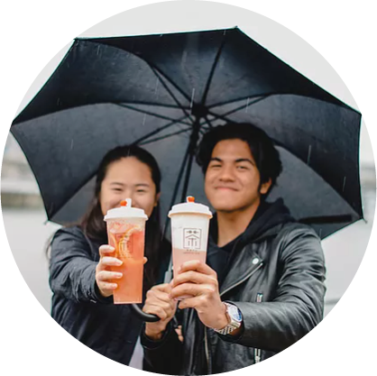
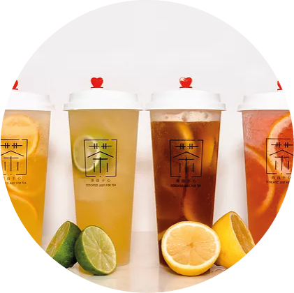
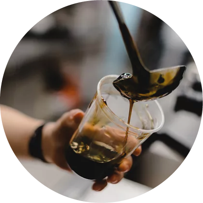
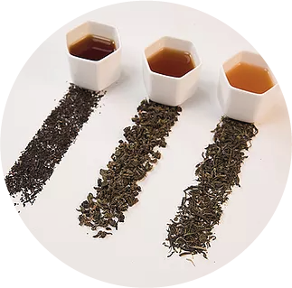
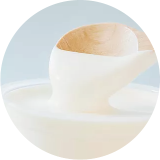
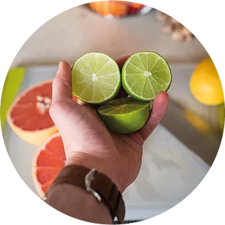
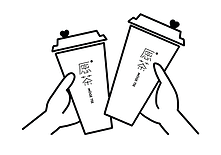

ABOUT US
With over 500 outlets worldwide and counting, we have won the hearts of tea lovers around the world all the way Australia, Malaysia, China to USA and we are now finally expanding its reach to Europe, in the beautiful south of the Netherlands, Maastricht.
SPECIALIZED
We specialize in cheese topped, fruit and milk tea. Each cup of tea is made with care and no detail is overlooked. We have an unending desire to discover, create and share our tea knowledge.
COMMITMENT
MÖGE TEE is committed to delivering the finest Tea in the world, using only natural and fresh ingredients to deliver new and fashionable drinks that are extremely rich in flavor for our customers!
Every cup we brew is a chance to make tea more enjoyable, more accessible and more experimental. Everything we do and believe in has to do with our love and passion to provide, the highest quality tea and sharing this love to everyone who feels the same way.
FIND INSPIRATION IN YOUR CUP OF TEA
Natural Tea
Authentic high-quality tea imported from Taiwan
Smooth Cheese
Sweet cream cheese with a lightly salted aftertaste giving your tea a delightful twist
Fresh Fruits
The rich taste of sweet or sour fruits that blend perfectly with our tea
